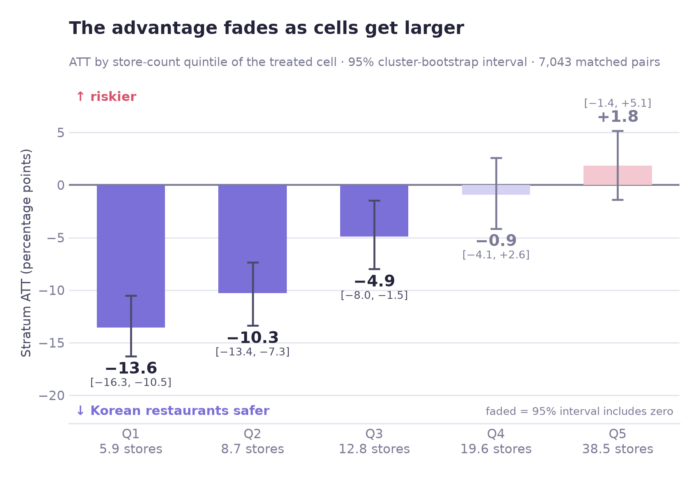
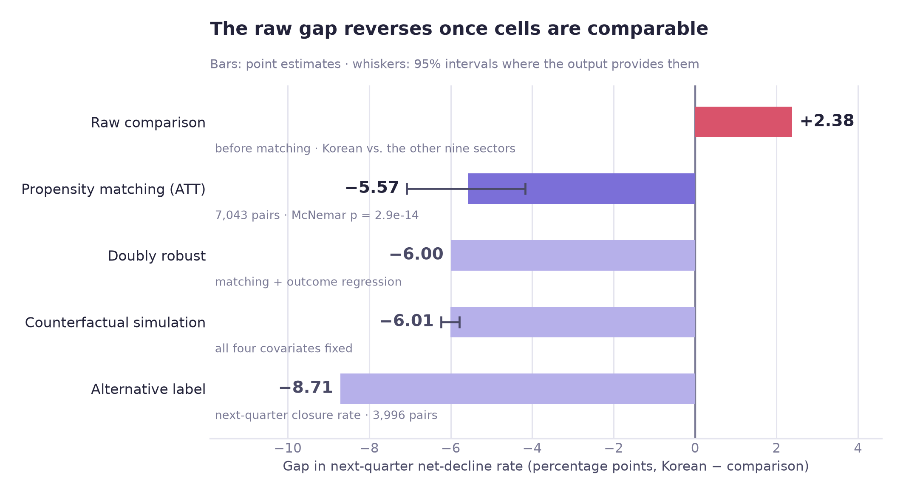
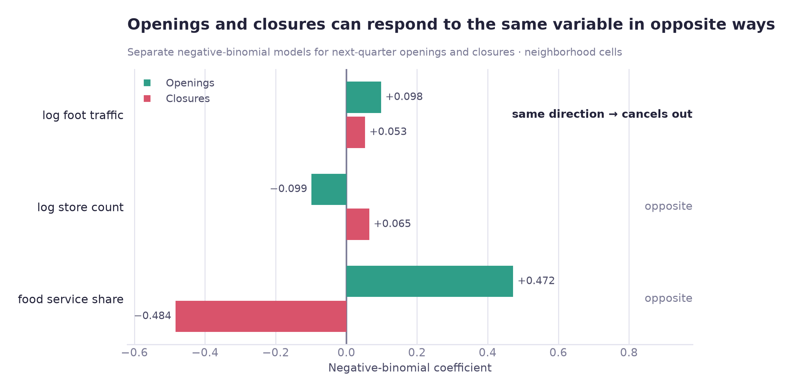
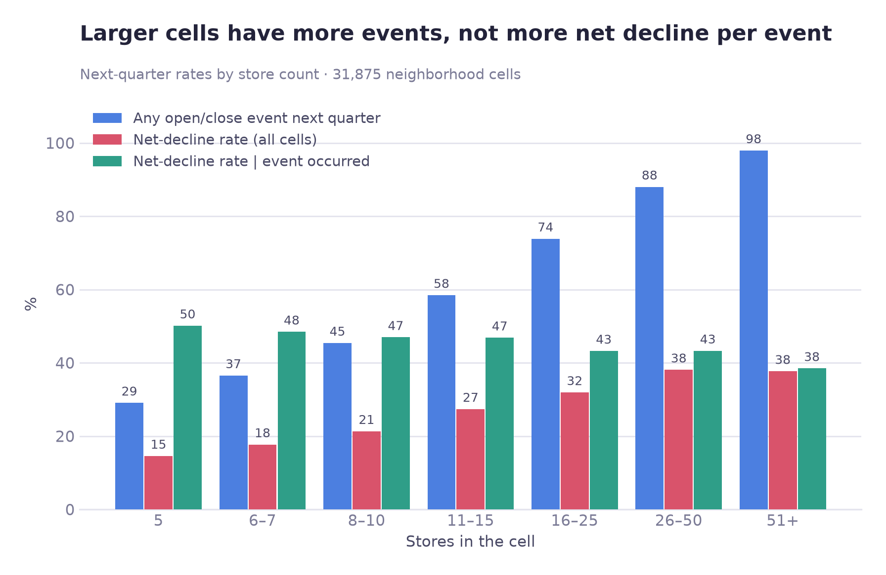
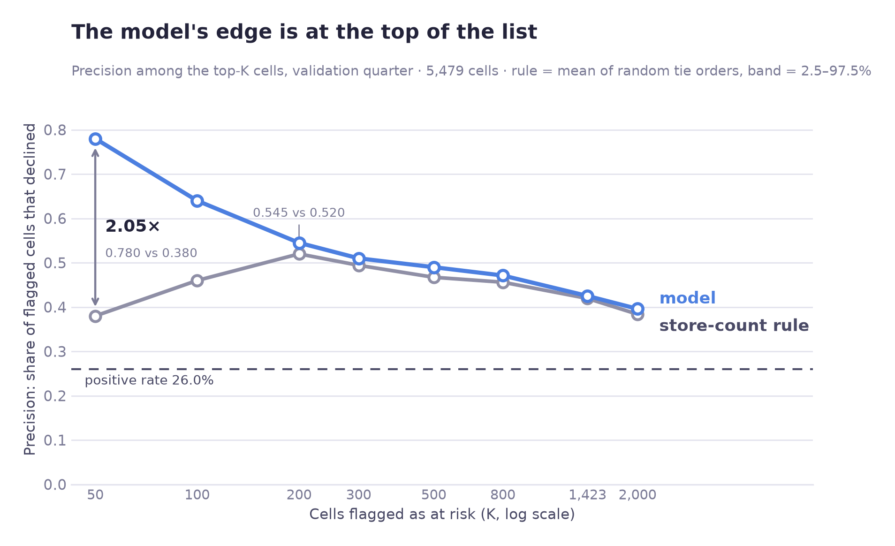
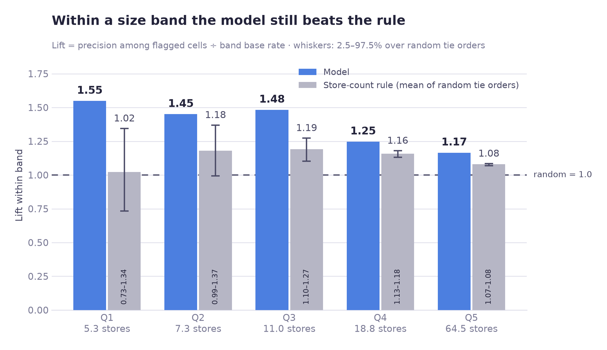
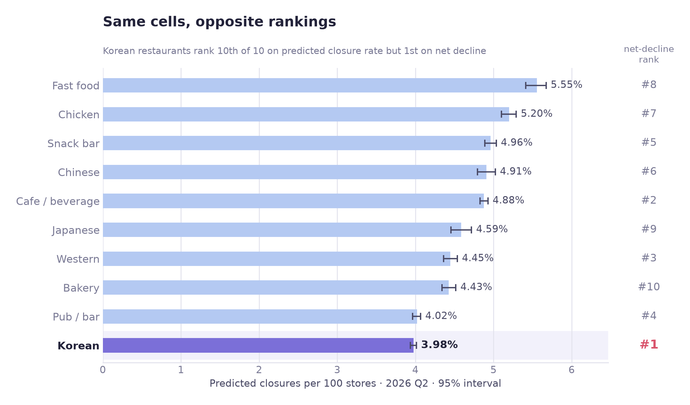

00
Executive summary
The whole project in one screen
If support follows a net-decline ranking, that ranking tracks district size more than business risk. The category it puts first overall in neighborhood commercial areas turns out to be safer than comparable matched cells once cells are matched on size — though not at every size.
The headline that started it. Korean restaurants top the net-decline ranking — 25.3% against 22.9% for the other nine food categories, pooled over 12 quarters in neighborhood commercial areas (first in only 3 of the 12 quarters taken individually). If support is allocated by a ranking like this, a gap like that could steer who receives consulting and emergency loans.
Two tests dismantled it
| Test | Result | What it means |
|---|---|---|
| Permutation test · 1,000 shuffles | p = 0.344 | The top category's lead over the all-ten average is +1.70 pp; picking the maximum of ten categories alone produces +1.49 pp on average, so 88% of that lead is selection |
| Propensity matching · 7,043 pairs | −5.57 pp | Once cells are genuinely comparable, the sign reverses |
| Woolf homogeneity test | p < .0001 | …but that average is a blend, not a summary — clearly negative in the three smallest size bands, indistinguishable from zero in the two largest |

Key findings
Store count alone accounts for almost all of the modeled reversal (−5.84 pp vs −6.01 pp with all four covariates held fixed). Foot traffic shows no significant association with net decline once store count and the other covariates are held fixed (AME +0.72 pp, p = 0.078; without store count it is strongly significant: AME +3.97 pp with foot traffic alone, +2.66 pp with area size and attracting facilities added, both p < 0.0001). It raises openings and closures alike, so it largely cancels in the subtraction. A busy district is not a safe one; it is a fast-turnover one.
The indicator decomposes exactly. Net decline = an event occurred × that event netting negative. Store count drives the first term and barely touches the second — so the metric measures how often something happens, not how badly it goes.
Seoul's change-indicator HL ("contraction") group has lift 0.937 for next-quarter net decline in the validation quarter — below 1, worse than an average pick. That says nothing about the indicator's other uses.
The model earns its place at the operating point, not on the leaderboard. Top-50 precision 0.780 against 0.380 for a store-count rule in the validation quarter — and the two lists overlap by only 4%, so 48 of the 50 flagged cells are ones the store-count rule does not list.
One result was measured and set aside: the closure-count model's 0.915 category rank correlation (10 categories, one validation quarter), not reported as performance evidence; single-quarter rankings of the net-decline label turned out to be noisy (see the log).
Recommendation
Rank cells, not categories
Do not use net decline as a standalone measure of vulnerability. Show closures per store beside it, and if support is allocated, do so at the level of one neighborhood commercial district × one food category — not by industry rank.
At a glance
01
Overview
What was audited, and why it was worth auditing
Seoul's Commercial District Analysis Service publishes store openings and closures for every commercial district × food category in its quarterly tables. This project defines a cell's next-quarter net decline as closures outnumbering openings. If a district officer ranked food categories by that flag when deciding where consulting and emergency loans go, the ranking would have the properties tested below.
This project checks whether such a ranking means what it appears to mean: 13 quarters of Seoul commercial-district data (12 labeled), 67,475 cells across all four area types, ten food categories, run through causal inference and forecasting to ask whether the metric identifies risk or merely identifies size.
The unit of analysis
A cell — one commercial district × one food category × one quarter. Everything on this page is measured at that unit unless stated otherwise.
Two similar words
Commercial district is one trade area in the commercial-district boundary table (1,650 of them). City district is one of Seoul's 25 boroughs. They are not interchangeable, and the difference matters for the recommendation.
The answer changes an action. If the gap comes from size confounding, any category-level allocation would have to be replaced by cell-level allocation conditioned on size. If it does not, a category-level ranking stands.
02
Business question
Who decides what with this number
Korean restaurants sit at #1 on the pooled net-decline ranking in neighborhood commercial areas (first in 3 of the 12 quarters taken one by one). They are also the largest category in neighborhood districts, averaging 21.3 stores per cell against 10.3 for the other nine. More stores means more open/close events, and more events means more chances to land on the wrong side of a subtraction.
Main question
Does controlling for commercial scale and foot traffic change the apparent difference in net-decline risk between Korean restaurants and other food categories?
Stated as a hypothesis before the analysis: matching on those two variables will narrow the gap.
Sub-question
Among sales, foot traffic and store density, which commercial characteristics actually relate to next-quarter net decline?
This one turned out to have a more interesting answer than expected — foot traffic shows no significant association with net decline once store count and the other covariates are controlled (AME +0.72 pp, p = 0.078), though it is significant without that control.
Unit
cell
Cells (all four area types)
67,475
Labeled quarters
12
Positive rate
25.5%
03
Data
Where it came from, and what had to be fixed before it could be used
Source
Seoul Open Data Plaza · Commercial District Analysis Service tables (provider: Seoul Credit Guarantee Foundation; license: KOGL Type 1, attribution; copyright holder: Seoul Metropolitan Government), 2023 Q1 – 2026 Q1. Five datasets were merged into one panel, plus a sixth used only as an external benchmark:
| Dataset | What it contributes |
|---|---|
| Stores by Commercial District | Store counts, openings and closures, franchise split — the source of the label |
| Street-Level Population by Commercial District | Foot traffic by hour, weekday and age band |
| Commercial District Boundaries | Polygon area, coordinates, district type |
| Attraction Facilities by Commercial District | Attracting-facility count and subway-station count per commercial district |
| Estimated Sales by Commercial District | Estimated sales value and transaction counts |
| Commercial District Change Indicator | The city's own HH/HL/LH/LL classification — used only as a baseline, never as a feature |
The dataset was used for educational portfolio purposes. All analysis, statistical testing, interpretations, and recommendations were independently developed as part of this project.
From 995,377 rows to 67,475
| Stage | Rows | Why |
|---|---|---|
| Raw store table | 995,377 | All business categories |
| 10 food categories × 13 quarters | 160,352 | Scope |
| Label constructible | 147,138 | Needs a following quarter to label against |
| 5 or more stores per cell | 67,495 | See below |
| Analysis sample | 67,475 | Foot traffic and area valid; all four area types |
| Neighborhood commercial areas only | 34,647 | Raw gap, permutation, matching and stratified-ATT sample (7,043 matched pairs) |
A five-store floor −54.1% of rows
The reason is the label, not the sales data. Arithmetic illustration: in a three-store cell one closure is a third of all stores, against about 3% in a 30-store cell. That is sample size, not district decline — and left in, those rows teach any model to find small cells rather than risky ones.
Sales missingness points the same way: 45.4% overall, 7.1% at five stores or more, 100% at two or fewer. A rate of exactly 100% is a rule rather than attrition, but what that rule is could not be confirmed — no published suppression threshold was located. It is reported as an observation, not a cause.
Note the filter is on store count, a covariate — not on missingness. The label is observed for every cell either way, so this narrows the population rather than selecting on the outcome. The cost is 54.1% of rows, which is why every conclusion carries the scope note “cells with five or more stores.”
A column that changed meaning would have biased every category comparison
In the 2023–24 files, store_count is not total stores — it is non-franchise stores. The 2025 schema renamed it and introduced a separate total. Two identities confirm it at a match rate of 1.0000.
Correcting the mapping moved the sample from 55,795 to 67,475 (+20.9%), and the increase was wildly uneven: chicken +390% against Korean +2%. Left uncorrected, franchise-heavy categories would have been systematically undercounted in exactly the comparison this project is about.
Sales excluded from the matching covariates
Missingness differs by category, and category is the treatment variable. Including sales would drop control cells selectively and bias the match itself.
A three-layer guard on every join
A duplicated key raises no error — it silently multiplies rows. Key uniqueness was asserted before merging, the merge was run with a declared relation, and the row count was checked after.
04
Methodology
How the question was turned into something testable — and how each answer was checked
The pipeline
| # | Step | Decision that mattered |
|---|---|---|
| 1 | Define the label | Net decline in quarter t+1, built inside each (district, category) group so no cell borrows another's future |
| 2 | Let the distribution pick the test | Normality failed in all 39 groups across three comparisons (commercial-area type 4/4, service category 10/10, city district 25/25), so Kruskal-Wallis was used rather than ANOVA — chosen from the data, not from preference |
| 3 | Test whether the gap is real | Permutation test, because the treated category was selected as the maximum of ten |
| 4 | Make the groups comparable | 1:1 propensity matching inside a caliper, exact-matched on quarter, without replacement |
| 5 | Attack the result | Doubly robust estimation, counterfactual simulation, an alternative outcome label, and a split by size |
| 6 | Predict, then benchmark honestly | Rolling validation against a baseline ladder and against the city's own indicator |
Why matching rather than regression adjustment
The overlap problem is the point of the exercise. The two groups differed by a full standard deviation in store count. A regression would report a coefficient by extrapolating into the region where no comparable control cell exists. Matching cannot do that — a treated cell with no partner is dropped and counted, so the failure becomes a visible number rather than a silent extrapolation.
Regression was not discarded: it runs as the doubly robust estimator alongside the match, which is why both numbers are reported.
Why gradient boosting margin within noise
Six candidates were compared. The gap between the naive baselines (always-average, previous-quarter status, category average; PR-AUC 0.26–0.29) and any model is large; the gap between the models is not, and neither is the gap between the best of them and the store-count rule (PR-AUC 0.418 against 0.388) — across six rolling quarters, boosting beats logistic regression by 0.001 AUC on average across the six rolling quarters (0.666 vs 0.665; logistic is higher in 2 of the 6, including the validation quarter), while the quarter-to-quarter standard deviation is 0.011.
The strength of this project is not the difficulty of the methods. It is the number of times a result was doubted — five times, and once the result was set aside.
Verification log
| # | What was doubted | Verdict | Outcome |
|---|---|---|---|
| V‑01 | We picked the highest of ten categories — does ranking first mean anything? | Observed +1.70 pp against a null of +1.49 pp, p = .344 | gap rejected |
| V‑02 | Saying “we matched on store count” is not the same as the groups being comparable | Store count 1.00 → 0.044; all four covariates clear |SMD| < 0.1 | balance passed |
| V‑03 | A mean can hide effects that differ across size bands | Woolf p < .0001 — clearly negative in three bands, zero-inclusive in two | not summarisable |
| V‑04 | “Bigger cells are riskier” might only mean “bigger cells have events more often” | Decomposed the label; the size dependence sits almost entirely in event frequency | label defect |
| V‑05 | The closure-count model's category rank correlation was 0.915 (10 categories, one validation quarter, neighborhood cells) | Not reported as performance evidence: it rests on ten categories in a single quarter. Separately, the net-decline label's single-quarter rankings are noisy (split-half 0.212 service category, 0.086 district, 0.035 district × category) | result discarded |
One of the five ended with a number being set aside rather than used as evidence. Declining to answer is part of the result.
05
Analysis
Six findings, in the order they were established
A · The top rank is not distinguishable from selection
Shuffling the category label 1,000 times breaks any relationship with the outcome while holding every group size fixed. Under that null, the top category still sits above the overall mean — because with ten finite samples, one of them is always lucky. Measuring that bump is the whole test.
Observed gap
+1.70 pp
What chance produces
+1.49 pp
Permutation p
0.344
Explained by selection
88%
p = .344. Ranking first is not statistically distinguishable from chance. This strengthens rather than weakens what follows — the evidence does not support a firm claim that Korean restaurants are intrinsically the riskiest. The matched estimate does not rest on the ranking, but Korean restaurants were still chosen as the top-ranked category, so it describes top-ranked cells rather than every category.
B · Conditioning reverses it
Korean cells were paired 1:1 with the nearest comparable non-Korean cell, exact-matched on quarter; 70.7% of Korean cells found a partner. The matched controls are not an average of the other nine categories: 52.7% are coffee/beverage cells and 21.4% pub/bar cells. Balance is checked before the outcome is read, so the design can be judged on its own terms:
| Covariate | Before | After | Verdict |
|---|---|---|---|
| log store count | 0.999 | 0.044 | balanced |
| log foot traffic | −0.447 | 0.031 | balanced |
| log area | −0.473 | 0.036 | balanced |
| log attraction facilities | −0.461 | 0.038 | balanced |
All four clear the |SMD| < 0.1 threshold. Only then is the gap worth reading.

C · But the average is not a summary
A mean can hide effects that differ across size bands. Before reporting −5.57, the matched pairs were split by size to see whether that number is a summary or a blend.
Why the effect fades with size
“Korean cells are bigger” cannot be the answer — matching balanced store count across all pairs (post-match SMD 0.044). That is an average over every pair; it does not guarantee the two sides are equal inside each size band, where the top band is wide (mean Korean cell 38.5 stores).
Korean restaurants carry a median of 16 stores per cell against 6–10 for every other category. Matching on the absolute count therefore pairs a cell that is small for a Korean cell with one that is large for its own category — and that mismatch inverts as the bands climb.
The reading is uncomfortable and worth stating plainly: part of −5.57 pp may not be “Korean is safer” but “a cell far below its own category's norm is safer than one sitting at or above its own.”
Stated as a hypothesis, not a result. Five bands give five points. Confirming it means re-matching on within-category percentile rather than absolute count — listed as follow-up work, not something this analysis settled.
The statement that survives: Korean restaurants are markedly safer in small cells, the advantage fades with size — in the fourth band (Korean cells with about 16–24 stores, mean 19.6) and the fifth (24–142 stores, mean 38.5) the interval includes zero. Quoting −5.57 pp on its own hides that gradient.
D · Only one thing moves the gap
Setting one covariate at a time to its median in every neighborhood cell (31,875 cells) and re-predicting with the fitted model shows where the modeled reversal comes from:
| Held fixed | Predicted gap |
|---|---|
| Nothing held fixed (model's predicted gap; observed +2.27 pp on the same cells) | +3.06 pp |
| Store count only | −5.84 pp |
| Foot traffic only | +3.53 pp |
| Area only | +3.20 pp |
| All four covariates | −6.01 pp |
Store count alone accounts for almost all of the modeled reversal. Adding the other three changes it by 0.17 pp. In the regression store count has the largest marginal effect (+14.28 pp, similar in size to the fast-food category dummy at +13.89 pp), while foot traffic is not significant once store count is in the model.
Foot traffic showing no net-decline association once store count is controlled (AME +0.72 pp, p = 0.078; +2.66 pp, p < 0.0001 when store count is left out) is the interesting part, and there are two possible reasons for it.

Reason 1 · It cancels in the subtraction
Foot traffic raises openings and closures, and roughly 70% of the combined coefficient size cancels in the difference (offset share = 1 − |opening − closure| / (|opening| + |closure|)). Busy districts are not shown to be more dangerous — they show higher turnover, and net decline cannot see the distinction.
Reason 2 · It is a proxy for location
Within the same cell over time, changes in foot traffic are not significantly linked to opening or closure counts (p = 0.865 and 0.963). The cross-sectional association may therefore reflect persistent location traits — for example access or district character — rather than foot traffic itself; rent is not in the data.
E · What the metric actually measures
This is where the audit lands. Net decline is a strict subset of “an event occurred” — a cell with no openings and no closures cannot post a negative net. So the metric decomposes exactly, not approximately:
P(net decline) = P(an event occurs) × P(it nets negative | an event occurs)

48.5% of these cells (15,451 of 31,875) recorded a zero because nothing happened at all — not because nothing bad happened (43.7% in the full 67,475-cell panel). A five-store cell has a 71% chance of no event in a quarter; a cell with 51 or more stores has a 98% chance of one.
Estimating store count's effect at each stage separately: it is concentrated in the first stage (coefficient +1.483) and small and not statistically significant in the second (+0.046, p = 0.114). After adjustment, size is not shown to predict the direction once an event has occurred. So the honest statement is not “bigger cells are safer” but “the indicator measures how often something happens, not how badly it goes.”
F · Not every category depends on where it is
Applying the test selected earlier — each category fixed, district types compared within it — the effect sizes range from 0.1202 down to 0.0002:
| Category | Effect size (ε²) | Reading |
|---|---|---|
| Pub / bar | 0.1202 | Highly location-dependent |
| Cafe / beverage | 0.0652 | Location-dependent |
| Korean | 0.0607 | Location-dependent |
| …six categories between | 0.048 – 0.016 | Weak to negligible |
| Chicken | 0.0002 | Area type explains almost nothing |
The two ends are ε² 0.1202 (pub/bar) and 0.0002 (chicken); the chicken value is statistically indistinguishable from zero (p = 0.355), so no ratio between them is quoted. Area type explains almost none of the variation in chicken shops' net-decline frequency (ε² = 0.0002), so district-level intervention is less likely to be the lever — only the area-type classification was tested. A plausible read is high delivery share reducing location dependence, though nothing in this dataset measures delivery.
06
Results
The headline estimate, what the model is worth, and what came out of it
The causal estimate
ATT
−5.57 pp
95% CI
−7.08 · −4.17
Pairs
7,043
Doubly robust
−6.00 pp
The interval comes from a commercial-area-level cluster bootstrap (853 commercial areas, 500 resamples) — cells from the same commercial area recur across quarters and are not independent, and resampling them individually would fake a narrower interval. Across nine designs varying caliper width, replacement, exact-matching on quarter/district and seed, the estimate stays between −5.82 and −4.10 pp. A tenth setting that adds sales, which limits the sample to cells with observed sales (about 90%, 5,312 pairs), gives −3.65 pp; the sign is the same in all ten.
What −5.57 pp is an estimate of
An ATT, not an ATE: the effect on the treated cells that actually exist, which is the right question because the decision it informs concerns the cells currently topping the ranking. It is also restricted to the region of common support — 70.7% of treated cells were matched, and the unmatched 29.3%, which disproportionately include very large Korean cells, are excluded rather than extrapolated over.
What the model is actually worth
Aggregate ranking ability is only slightly better than store count alone (PR-AUC 0.418 against 0.388; AUC 0.669 against 0.654). That reads as failure until you look at where the flags actually go.
Top 50 · model precision
0.780
Top 50 · store-count rule
0.380
Smallest cells · model lift
1.548
Smallest cells · rule (mean over random tie order; range 0.73–1.34)
1.022

4% overlap at the top of the list answers the obvious objection. If the model were quietly re-deriving store count, the two lists would agree; instead 48 of the 50 cells it names are cells the store-count rule does not list.

Performance, without the flattering framing
net-decline model: rolling AUC 0.666 ± 0.011 over 6 quarters · closure-count model (2,772 neighborhood cells, 2025 Q4 → 2026 Q1): top-decile lift 2.25× (store-count rule 2.18×), AUC 0.711 vs 0.705 for store count (+0.006)
The single-quarter validation figure is slightly higher, but the model was selected on that quarter, so it is optimistic by construction. The rolling number is the one reported — and the two agree to 0.003 (0.669 vs 0.666), though the rolling figure includes the validation quarter, so this is not an independent check.
Against Seoul's published change indicator
Validation quarter, 5,479 cells, all four area types.
| Seoul's change indicator | Cells | Net-decline rate | Lift |
|---|---|---|---|
| HL · “district contraction” | 974 | 24.3% | 0.937 |
| HH | 1,452 | 23.3% | 0.899 |
| LH | 790 | 22.9% | 0.882 |
| LL | 2,263 | 29.4% | 1.133 |
Districts flagged as contracting decline less than average next quarter. A lift below 1 is worse than random. Its original purpose may differ from next-quarter prediction; because it incorporates closure-related information, using it as a feature could leak the target, so it is used only as a baseline.
The deliverable

The forecast also shows the project's problem in one comparison. Rank correlation between the two predicted metrics — predicted closure rate and predicted net-decline probability, across the ten categories — is −0.370 (with only ten categories that is not distinguishable from zero, p ≈ 0.29). The category with the highest predicted net-decline probability finishes tenth of ten on predicted closure rate (point estimate; its interval, 3.94–4.01, overlaps pub/bar's 3.97–4.07). If support follows a net-decline ranking, the choice of metric could change who gets support.
07
Business insights
What the numbers mean for the people using them — and what to do about it
① A net-decline ranking tracks size, not risk
The definition itself — closures minus openings — promotes cells where events are frequent. Korean restaurants' cells are large (21.3 stores per cell against 10.3 for the other nine), and holding store count fixed removes the modelled gap (+3.06 pp to −5.84 pp). The page does not split the top rank into a size part and a selection part: the 88% selection figure is measured against the all-ten average, the matched estimate against matched controls. In the validation quarter the city's change indicator did not work as a next-quarter screen either (HL lift 0.937); that should not be generalized to its other purposes.
② “Open where the foot traffic is” is half of a sentence
Foot traffic raises openings and closures alike. A busy district is not a safe one — it is a fast-turnover one. And within a cell over time, changes in it are not significantly linked to openings or closures, so it may be standing in for fixed location traits rather than acting on its own.
③ Neither “Korean is safe” nor “Korean is risky” is a true sentence
Conditioned on measured circumstances, Korean restaurants have a lower net-decline rate than their matched controls in the three smallest size bands (−13.6 to −4.9 pp). In the two largest bands (Korean cells with about 16–24 stores, mean 19.6, and 24–142, mean 38.5) the difference is indistinguishable from zero. The signal lives in the category-by-size combination, which is precisely what a category ranking cannot express.
④ Single-quarter city district × category rankings are not stable; the model was evaluated at the cell level
Ranked at city district × category from a single quarter (neighborhood cells, 2025 Q4 features, 2026 Q1 outcome), the answer key reshuffles when you re-measure it (split-half reliability 0.035 across 240 district × category cells). With six quarters pooled and only cells of at least 60 rows kept (97 cells) it is 0.259 — a different set of cells, so the two numbers are not a like-for-like gain. Cell-level scores are stored so the aggregation is possible, but a single-quarter ranking at that unit would mostly be noise. Declining to answer is part of the answer.
⑤ The model earns its place on small districts, not on the leaderboard
On aggregate ranking it adds little over store count. Hold size constant and the store-count rule's lift falls to 1.02–1.19 while the model's stays at 1.17–1.55, with the widest margin in the smallest bands. Reading the aggregate number alone would lead to scrapping the model for the wrong reason.
Recommendations
01 Allocate by cell risk score, not by category rank
- Who
- District small-business offices, if they allocate consulting and emergency loans by a category net-decline ranking
- What
- Replace the category net-decline ranking with the top-K cell risk scores. Set K from the caseload an officer can actually contact — precision falls as K grows.
- Evidence
- In the validation quarter, 39 of the model's top 50 cells had a net decline, against 19 for the store-count rule. The lists overlap by only 4%, so 48 of those 50 cells are not on the store-count list.
- Caveat
- This means the micro commercial district, not the city district. City district × category rankings were unstable in single-quarter data (split-half reliability 0.035 in one quarter; 0.259 for six pooled quarters among cells with at least 60 rows), so they are not shown.
- How to verify
- Two quarters later, compare supported cells against unsupported cells with similar risk scores — a natural control group
02 Do not present net decline on its own
- Who
- Anyone building or quoting a net-decline ranking from open commercial-district data (net decline is this project's own flag, not a published indicator)
- What
- Show closures per store beside the net-decline rate. The two rank the ten categories at −0.370 correlation (2026 Q2 forecast, from two different models; with ten categories not distinguishable from zero, p ≈ 0.29), so they do not agree on which categories are riskiest. Also do not use the HL contraction flag as a risk signal.
- Expected effect
- In the 2026 Q2 forecast Korean restaurants rank #1 on predicted net decline and #10 on predicted closure rate (model estimates, not observed outcomes)
- How to verify
- Ask dashboard users which categories are risky, before and after; or track how the figures get quoted in press coverage
03 Rewrite the foot-traffic line in startup counselling
- Who
- District small-business centre counsellors; credit guarantee foundation consultants
- What
- Replace “choose a district with heavy foot traffic” with “heavy foot traffic goes with more openings and more closures — it signals fast turnover, so plan working capital accordingly.”
- Possible effect
- Fewer under-capitalised openings in high-footfall districts.
- How to verify
- 12-month survival rate of counselled openings, before and after the revision
04 Match the instrument to the category's location sensitivity
- Who
- Programme designers choosing between district-level and business-level instruments
- What
- Location-sensitive categories (pub/bar, cafe, Korean) get location diagnostics and district consulting. Categories with little location dependence (chicken, ε² 0.0002; fast food, ε² 0.0161, not significant after Bonferroni correction) get cost-structure measures instead — delivery commissions, franchise terms, operating efficiency.
- Expected effect
- Avoids assuming district-level support will move categories whose net-decline frequency barely varies by area type (not tested as an intervention). The gap in area-type sensitivity between the two ends is large (ε² 0.1202 for pub/bar against 0.0002 for chicken, which is statistically indistinguishable from zero, p = 0.355).
- How to verify
- Compare outcomes of district-level support for high- and low-sensitivity categories over four quarters
08
Limitations
What this cannot support
Aggregated quarterly counts cannot say which shop closed, and matching only balances what was measured.
The average is not a summary
The effect runs from −13.6 pp to +1.8 pp across size bands: clearly negative in the three smallest, with intervals that include zero in the two largest (Woolf p < .0001). Quoting −5.57 pp alone conceals that gradient — the stratum table has to travel with it.
Scope
Causal estimates: neighborhood commercial districts, cells with five or more stores, ten food categories. The prediction models were fitted and validated on all four area types. Developed districts and traditional markets need refitting. Treated match rate 70.7% — very large Korean cells are disproportionately among those left outside.
Unobserved confounding
Matching balances measured covariates. Rent, owner age, tenure and capitalisation are absent, so the results are adjusted associations rather than proven causal effects.
The unit of observation
Data arrives pre-aggregated to district × category × quarter, so which shop closed is unknowable. Most of the variation in closure counts is individual circumstance, and none of it is here.
Sales missingness is undiagnosed
The handling is conservative — excluded from matching, never imputed — but it was not checked whether the residual missingness correlates with the outcome, or what the 100% suppression rule actually is. The ATT does not use sales, so the exposure is confined to the prediction model.
An undocumented covariate
The area field has no definition in the source. The values suggest full polygon area rather than commercial floorspace — an inference, not a fact.
No sealed test quarter
The validation quarter was also used to choose the model. Six-quarter rolling validation stands in and the two figures agree to 0.003 — but a genuinely sealed quarter would be better practice.
Reproducibility
Matching is now deterministic: one shared seed (42), stable tie-breaking and a single matching routine, and the pipeline's CSV outputs are byte-identical across two full runs; the figures were regenerated from those CSVs.
What would move this forward
| Rank | What is needed | What it unlocks |
|---|---|---|
| 0 | No new data — re-match on within-category percentile | Tests whether the weakening of the effect in the largest bands is an artefact of matching on absolute store count. Cheapest open item, and the one most likely to change how −5.57 pp must be described |
| 1 | Business-registry event histories | Survival analysis instead of quarterly counts — “which shop, at what age” becomes answerable, and a risk window by tenure becomes actionable |
| 2 | District-level rent | Explains why store count matters at all. The available rent data is borough-level and has no discriminating power between commercial districts |
| 3 | Delivery-platform share | Tests whether the location-indifference of chicken and fast food is a delivery effect, which is currently an inference and nothing more |
| 4 | Staggered programme rollouts | Difference-in-differences — the only route here to ruling out unobserved confounding rather than merely naming it |
09
Tools & Skills
What was used, and for what
Programming & data handling
Statistics & experimentation
Causal inference
Modeling
Model evaluation
Visualization
Engineering practices
10
Repository
Notebooks, code, and full write-up
Code & outputs on GitHub →The repository contains twelve numbered Jupyter notebooks running end to end from the raw CSVs to the 2026 Q2 forecast and the figures (the pipeline's CSV outputs are byte-identical across two full runs, and the figures were regenerated from them) — along with the configuration module, the output tables and the full README write-up.